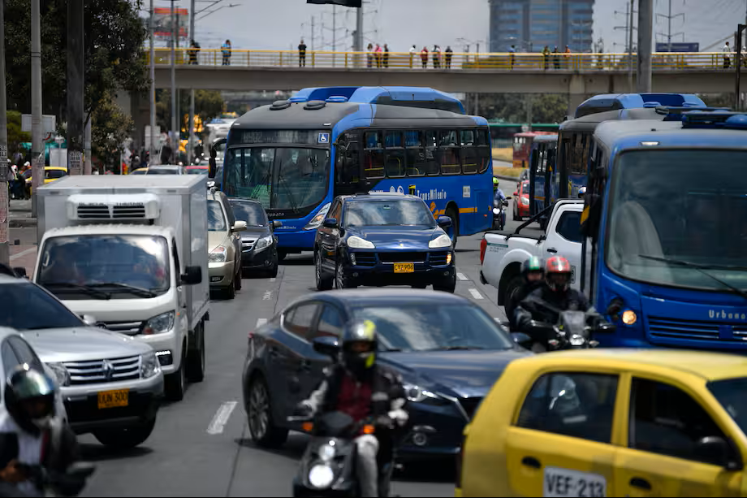
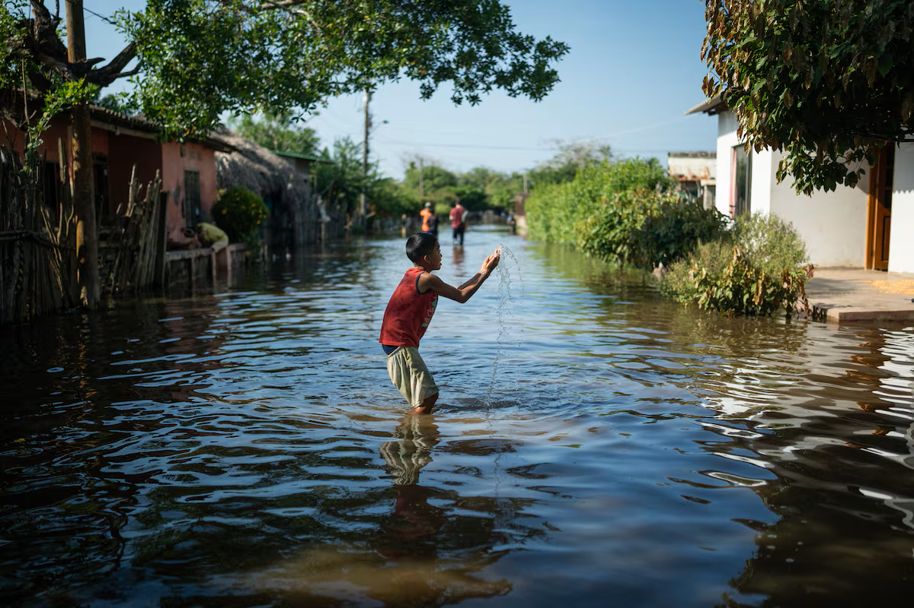

Movilidad hoy, 23 de abril: así está el tráfico en las vías de Bogotá
Para planear mejor su ruta este 23 de abril, El Espectador le cuenta en vivo cómo avanza la movilidad en Bogotá. Conozca el pico y placa para hoy, cómo está operando Transmilenio y las novedades en las principales vías de la capital.

Bogotá se prepara para posible crisis de agua
Bogotá está tomando medidas ante la posible llegada del fenómeno de El Niño en 2026. Las autoridades han mejorado el sistema de acueducto y aumentaron las reservas de agua, aunque aún existe riesgo por pérdidas y sequías

Feria del Libro 2026 impulsa la cultura
La Feria Internacional del Libro de Bogotá reúne a miles de visitantes con más de 2.000 actividades culturales. El evento fortalece el turismo y posiciona a la ciudad como un centro cultural en América Latina.